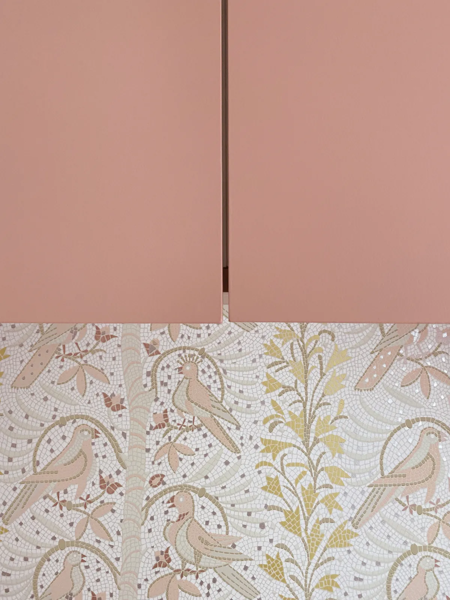
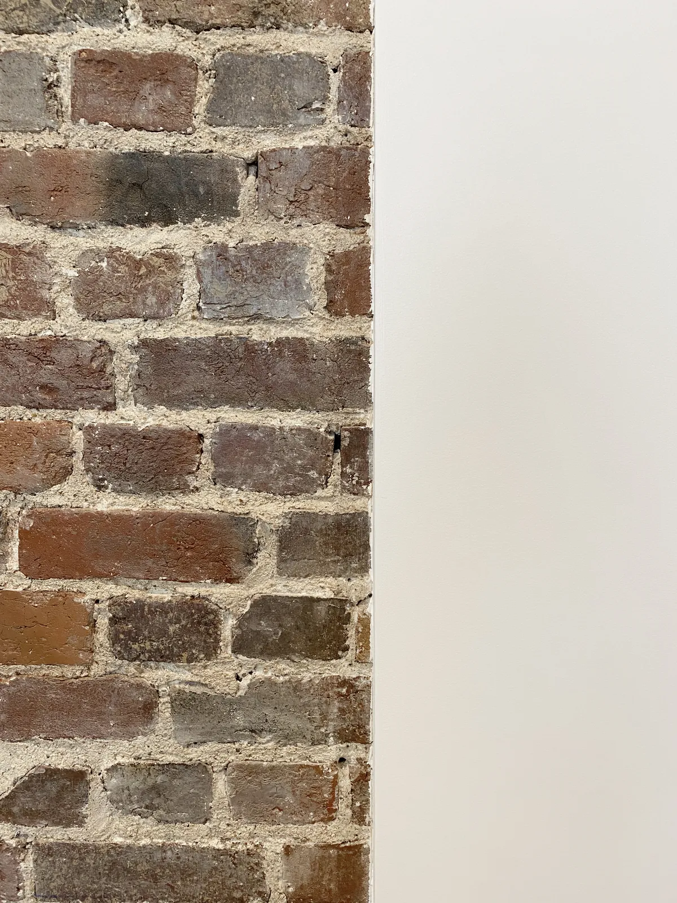

Stouls Studio / Portfolio / Appartement, Levallois-Perret II
Appartement, Levallois-Perret II
Un second appartement à Levallois-Perret, clair et calme, où la couleur est réservée aux menuiseries.
- Type
- Rénovation d'appartement
- Lieu
- Levallois-Perret, à l'ouest de Paris
- Intervention du studio
- Rénovation avec cuisine et menuiseries sur mesure
La cuisine longe un mur de fenêtres : elle a été gardée aussi claire que la pièce. Un plan de travail blanc qui retombe jusqu'au sol en bout de linéaire, un meuble haut en chêne, un robinet cuivré et un sol en terrazzo. Trois plafonniers en laiton suivent la ligne du plan de travail. Une ouverture encadrée de chêne, au-dessus du comptoir, laisse passer la lumière vers la pièce voisine.
La couleur est dans les placards. Un ensemble de rangements toute hauteur est peint en rose poudré et équipé de petits boutons en laiton en forme de fleurs. En dessous, une niche prend place dans un encadrement de chêne arrondi, tapissée d'un papier peint d'oiseaux et de feuillages dessiné comme une mosaïque, avec une seule applique.
D'autres photographies de cet appartement seront ajoutées ici.




Un projet comme celui-ci
Si ce projet ressemble à ce que vous avez en tête, dites-le-moi. Un lien vers cette page et deux lignes sur votre budget et votre calendrier suffisent pour commencer.
Précédent : Appartement, Levallois-PerretSuivant : Appartement, Boulogne-Billancourt